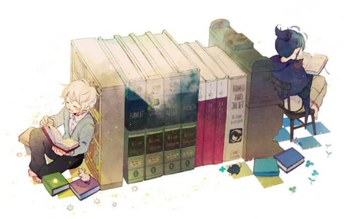

习作一：小学生作文我的爱好我的课余爱好很广泛，我喜欢下棋、跑步、打羽毛球、跳绳等等。但是我最喜欢的还是看书。 我喜欢每天早上起来时翻开书看一篇作文或故事，每次我都会因为太沉迷于书本里的故事忘了洗漱，下楼总会总会爸爸妈妈骂，不过我一点儿也不悲伤，因为我看到了一些好的故事。 想知道我为什么喜欢看书吗？让我来告诉你吧！ 在我10岁那年，我遇到了一个老人，他看起来很孤独，很悲伤，我走过去问他怎么了，他语重心长地说：“老了，不中用了，看不清楚字了，我的女儿在下厦门没回来，自己的膝盖不听我使唤，痛得厉害去不了城关买眼镜，没法看书了！”我听了很同情这位老人，我对他说；“没事我念给您听，但是，我有的字不懂念错了不要怪我哦！”他老人家欣喜诺狂，对我说；“没事没事，你真是乖啊！” 我开始翻起书来讲一篇又一篇的，我不由得爱上了书上的人物，看得入迷，老人笑了笑说：“孩子，看你这么乖，我看这本书就送你吧！以后长大了一定要当一个有用的人，帮帮贫苦的人家，帮助不识字的人，好吗？”我用奇怪的眼神看着他说：“老爷爷，如果不答应你，你不送我书是吗？”“是啊，你答不答应”“好，我答应你”我跟老爷爷拉了勾，我就回家了，从那以后我就爱上了看书。 书籍是人类的阶梯；书籍是最好的精神粮食，也是我们做好的伙伴。我已经离不开他了。

随着年龄的增长，我的求知欲越来越强烈。每当我看到一本新书，就两眼发光，像一个饥饿的人看到一块面包扑过去啃起来。读书，是我的最大爱好。 翻开一本书，像打开一扇窗，让我看到广袤的天空合上一本书，我似在炎热夏季喝下满满一杯凉水，全身清透无比。
我的心灵被震撼了，我被鲁滨逊的勇敢，自强，坚毅和开拓的乐观精神深深折服了。当夕阳的余辉为这本书镶上一道金边时，我才如梦初醒般发现自己坐在地上一口气看了四个多小时。虽然此时我口干舌燥，饥肠辘辘，可我却感到自己是这春日阳光下的一棵小树，绽开着向日葵般的笑脸。
“我曾四处寻找幸福，其实幸福就是一个人躲在角落里看书。”是啊，书，让我快乐，让我忧愁，让我丰富多彩。和书在一起，我的生活如此幸福。谢谢你，我的良师益友。谢谢你，一路伴我成长。